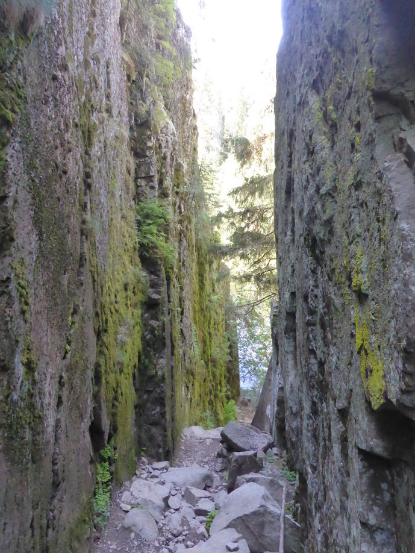
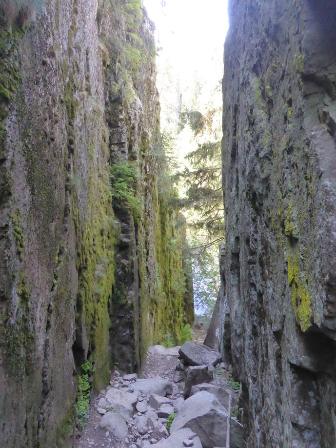

Eine Woche Ylöjärvi
Tag 53
Keuruu - Ruovesi 65 km
Zunächst ging es nach Haapamäki, wo ich mich mit Saara, einer Freundin aus Finnland traff. Anschließend fuhren wir gemeinsam weiter zum Ferienhaus ihrer Familie in Ruovesi. Dort angekommen wurde wir schon von ihren Großeltern erwartet. Zunächst wurde gut gegessen und am Abend ging es noch in die Sauna.
Tag 54
Ruhetag
  Am Ruhetag haben wir zu Fuß ein wenig den Nationalpark erkundet, und sind mit dem Boot über den See gerudert. Trotzdem blieb noch genug Zeit um in der Hängematte zu liegen und zu lesen.
 Am Ruhetag haben wir zu Fuß ein wenig den Nationalpark erkundet, und sind mit dem Boot über den See gerudert. Trotzdem blieb noch genug Zeit um in der Hängematte zu liegen und zu lesen.
Tag 55
Ruovesi - Ylöjärvi 82 km
Am nächsten Tag führen wir gemeinsam weiter zu Saara nach Ylöjärvi. Kurz vor Kuru riss mir dann die Kette. Ich vorher schon mit dem Gedanken gespielt diese zu tauschen, jedoch wollte ich damit bis Ylöjärvi warten. Da ich keinen Ersatz dabei hatte, habe ich die Kette einfach wieder zusammen gesetzt. Jetzt um das kaputte Glied kürzer. Das ganze war eine sehr dreckige Angelegenheit und ich war froh, als ich mir in der Kirche in Kuru die Hände waschen konnte. Am Ende haben wir es dann bis Ylöjärvi geschafft.
Tag 56
Ruhetag
Am Freitag ging es nach Tampere. Dort haben wir eine Freundin von Saara aus Slowenien getroffen. Diese war mit ihrem Freund auf einem Roadtrip. Von Slowenien waren sie über das Baltikum nach Finnland gekommen. Anschließend sollte es nach Schweden gehen. Die Beiden waren also aus der Richtung gekommen in die ich wollte. Somit konnten wir ein paar Tipps austauschen.
Auf dem Rückweg von Tampere haben wir noch eine neue Kette für mein Rad besorgt.
Am Abend ging es dann noch zum Frisbee Golf, welches sich in Finnland zurecht großer Beliebtheit erfreut.
Tag 57
Ruhetag
Am Samstagmorgen hab ich zunächst die Kette getauscht. Dabei viel mir auf, dass ich wohl auch noch eine neue Kassette benötige. Da ich das benötigte Spezialwerkzeug nicht dabei hatte brachten wir das Rad noch zum Fahrradladen. Dort versicherte man mir, dass das ganze bis Dienstag fertig sei.
Zurück in Ylöjärvi sahen wir uns noch ein Fußballspiel von Saaras Manschaft an. Obwohl Saara nach ihrem Auslandssemester in Österreich noch nicht wieder spielen durfte, wurde das Spiel trotzdem gewonnen. Und ich dazu noch mein Fußballwissen auffrischen können.
Tag 58
Ruhetag
Am Sonntag waren wir zum Geocachen im Wald. Da mein letztes Mal Geocachen etwas zurück lag habe uns ein paar mal an den falschen Koordinaten zum suchen lassen. Irgentwann hatte ich es dann aber wieder raus und wir konnten doch noch 3 Caches erfolgreich finden.
Am Abend haben Saara und Ich dann kulinarisches aus Deutschland un Österreich zubereitet. Es gab Flammkuchen und Kaiserschmarn.
Tag 59
Ruhetag
Bei sonnigem Wetter waren wir zunächst am See mit Freunden von Saara. Schwimmen musste ich leider alleine, da den Finnen doch glatt das Wasser zu kalt war. Anschließend haben wir noch gegrillt und lecker Kuchen gegessen.
Tag 60
Ruhetag
Als wir das Fahrrad wieder abholten wurden meine schlimmsten Befürchtunge war, als sich herraus stellte, dass auch vorne ein Ritzel getauscht werden musste. Zudem war dieses in dem Fahrradladen nicht vorrätig. Saara war so freundlich mit mir durch Tampere zu fahren und die Fahrradläden abzuklappern. Am Ende haben wir im Radladen Nr. 3 jemanden gefunden, der das Ritzel noch am selben Tag tauschen konnte. Leider hatte dieser besagtes Ritzel nicht vorrätig. Dies fanden wir dann im Fahrradladen Nr. 5, der auf den schönen Namen “Nippeli” hörte :) Somit war am Ende doch alles für meine Weiterfahrt am nächsten Tag bereit.